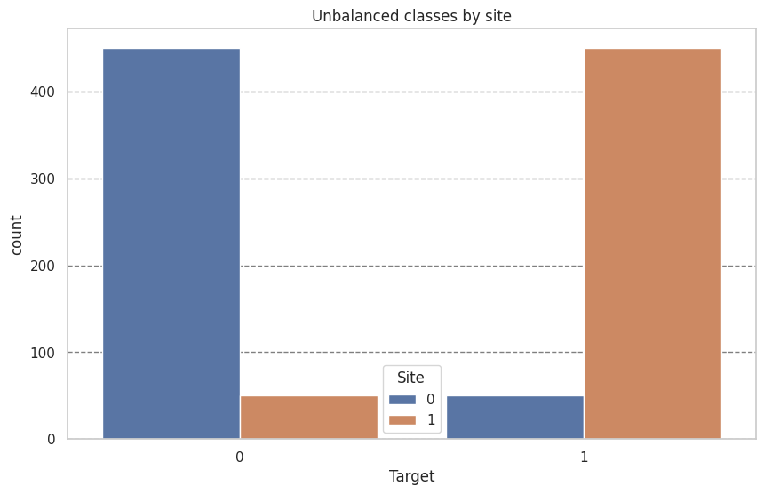
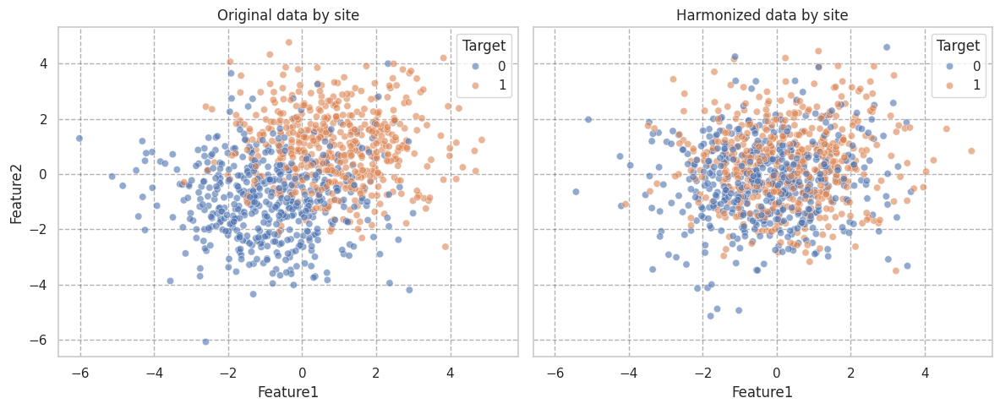
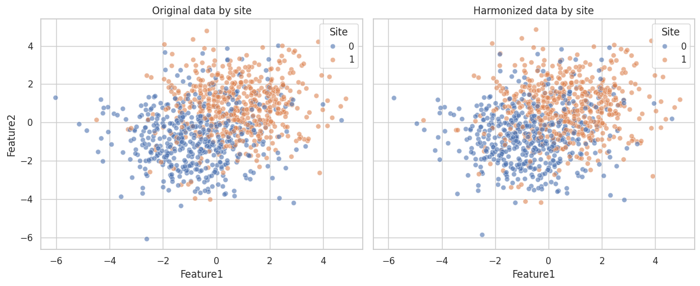

Analasing neuroComBat behaivor when imbalance across sites.#
import matplotlib.pyplot as plt
import pandas as pd
import seaborn as sns
from uniharmony import verbosity
from uniharmony.combat import NeuroComBat
from uniharmony.datasets import make_multisite_classification
sns.set_theme(style="whitegrid")
verbosity("warning")
X, y, sites = make_multisite_classification(
n_features=2,
signal_strength=2,
site_effect_strength=0, # NO site effect
balance_per_site=[0.1, 0.9],
)
df = pd.DataFrame({"Target": y, "Site": sites})
plt.figure(figsize=[10, 6])
plt.title("Unbalanced classes by site")
sns.countplot(df, x="Target", hue="Site")
plt.grid(axis="y", color="black", alpha=0.5, linestyle="--")

Note that we are harmonizing the whole dataset, which must be avoided in ML scenarios.#
This is just to illustrate the effect of harmonization.#
# Note that we are harmonizing the whole dataset, which is not how it would be used in practice.
# This is just to illustrate the effect of harmonization.
combat = NeuroComBat()
combat.fit(X, sites)
X_harmonized = combat.transform(X, sites)
df_orig = pd.DataFrame(X, columns=["Feature1", "Feature2"])
df_orig["Site"] = sites
df_orig["Target"] = y
df_orig["Phase"] = "Original"
df_harm = pd.DataFrame(X_harmonized, columns=["Feature1", "Feature2"])
df_harm["Site"] = sites
df_harm["Target"] = y
df_harm["Phase"] = "Harmonized"
fig, axes = plt.subplots(1, 2, figsize=(12, 5), sharex=True, sharey=True)
sns.scatterplot(data=df_orig, x="Feature1", y="Feature2", hue="Target", alpha=0.6, ax=axes[0])
axes[0].set_title("Original data by site")
axes[0].grid(alpha=0.3, color="black", linestyle="--")
sns.scatterplot(data=df_harm, x="Feature1", y="Feature2", hue="Target", alpha=0.6, ax=axes[1])
axes[1].set_title("Harmonized data by site")
axes[1].grid(alpha=0.3, color="black", linestyle="--")
plt.tight_layout()

Example preserving the target as covariate.#
This is also wrong in ML context, where you don’t have access to the full dataset but may be a good option for statistical analysis.#
combat = NeuroComBat()
# This is the key line: we need to include the target variable as a covariate
# to preserve its relationship with the features during harmonization.
combat.fit(X, sites, categorical_covariates=y.reshape(-1, 1))
X_harmonized = combat.transform(X, sites, categorical_covariates=y.reshape(-1, 1))
df_orig = pd.DataFrame(X, columns=["Feature1", "Feature2"])
df_orig["Site"] = sites
df_orig["Target"] = y
df_orig["Phase"] = "Original"
df_harm = pd.DataFrame(X_harmonized, columns=["Feature1", "Feature2"])
df_harm["Site"] = sites
df_harm["Target"] = y
df_harm["Phase"] = "Harmonized"
# Plot data distribution by site before and after harmonization
fig, axes = plt.subplots(1, 2, figsize=(12, 5), sharex=True, sharey=True)
sns.scatterplot(data=df_orig, x="Feature1", y="Feature2", hue="Site", alpha=0.6, ax=axes[0])
axes[0].set_title("Original data by site")
sns.scatterplot(data=df_harm, x="Feature1", y="Feature2", hue="Site", alpha=0.6, ax=axes[1])
axes[1].set_title("Harmonized data by site")
plt.tight_layout()
2026-04-29 10:04:22 [warning ] You specified categorical and/or continuous covariates to be preserved. If you intend to build a machine learning (ML) model,then make sure that you DO *NOT* preserve the ML model's target as covariate. You will be required to provide the covariate also at transform time, and this will produce data leakage. If you are performing a statistical analysis and want to preserve a variable of interest, then it is correct to specify it as covariate.
